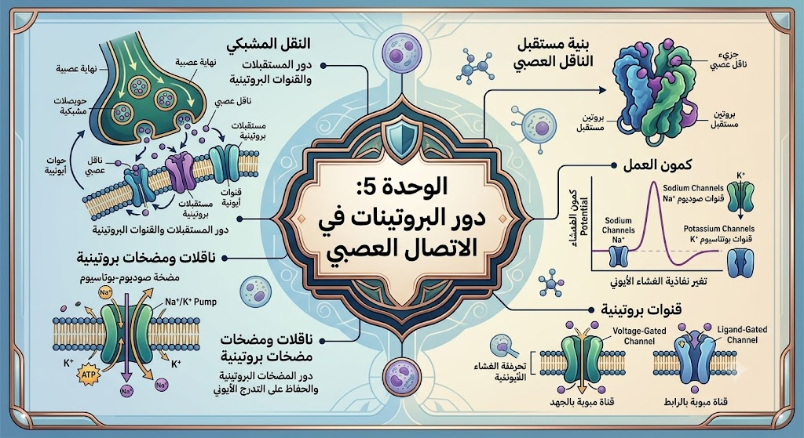

[ مساحة إعلانية علوية ]
موسوعة آليات الاتصال العصبي (النسخة الشاملة 1-20)
1. مفهوم كمون الراحة والاستقطاب
أ. القياس الكهربائي والقطبية الغشائية:
يُقاس كمون الراحة بوضع مجهرين؛ أحدهما على السطح والآخر في المقطع، حيث يسجل جهاز الأوسيلوسكوب فرق جهد ثابتاً يقدر بـ -70 mV. يعكس هذا الرقم حالة الاستقطاب، حيث يكون السطح الخارجي موجباً والداخلي سالباً، وهي الحالة الأساسية لليفة العصبية الحية في غياب أي تنبيه خارجي فعال.ب. التوزع غير المتساوي للشوارد:
يعود كمون الراحة إلى اختلاف تركيز الشوارد بين الوسطين؛ حيث يتركز الصوديوم Na⁺ والكلور Cl⁻ في الخارج، بينما يتركز البوتاسيوم K⁺ والبروتينات السالبة في الداخل. هذا التباين هو الذي يخلق تدرج التركيز (المنحدر الشاردي) الذي يسعى دائماً لتحريك الشوارد عبر الغشاء.2. القنوات المفتوحة باستمرار (قنوات الميز)
أ. النفاذية الانتقائية لشوارد البوتاسيوم:
يحتوي الغشاء على بروتينات تسمى قنوات الميز تسمح بمرور الشوارد حسب تدرج التركيز. تمتاز هذه القنوات بنفاذية عالية جداً لـ K⁺ مقارنة بـ Na⁺، مما يؤدي لخروج مستمر للشحنات الموجبة نحو الخارج، وهو السبب المباشر في جعل الوسط الداخلي سالباً (ظهور الاستقطاب).ب. الحفاظ على التوازن الكيميائي الكهربائي:
رغم خروج K⁺ المستمر، لا يتفرغ العصبون من شحناته بفضل قوى التجاذب الكهربائي التي تمنع خروج المزيد من الموجب نحو الخارج المشبع أصلاً بالشحنات الموجبة. هذا التوازن الدقيق بين تدرج التركيز والتدرج الكهربائي هو ما يثبت قيمة كمون الراحة عند القيمة المعلومة.3. دور مضخة صوديوم-بوتاسيوم (ATPase)
أ. النقل النشط واستهلاك الطاقة:
للحفاظ على تدرج التراكيز ومنع تلاشيه، تتدخل المضخة كبروتين غشائي ينقل الشوارد عكس تدرج التركيز. تستهلك هذه العملية طاقة ATP لطرد 3 شوارد صوديوم للخارج وإدخال شاردتين بوتاسيوم للداخل، مما يضمن بقاء الخلية في حالة استقطاب دائمة وجاهزية قصوى.ب. الطبيعة الكهروموجبة للمضخة:
بما أن المضخة تخرج 3 شحنات موجبة وتدخل 2 فقط، فهي تساهم بشكل مباشر في جعل الخارج أكثر إيجابية من الداخل. هذا الفرق العددي في الشوارد المنقولة يعزز من قيمة سالبية الداخل، مما يجعل المضخة ركيزة أساسية لا غنى عنها في استقرار النشاط الكهربائي للعصبون.4. كمون العمل: زوال الاستقطاب
أ. انفتاح القنوات الفولطية للصوديوم:
عند حدوث تنبيه يصل للعتبة، تفتح القنوات المرتبطة بالكهرباء الخاصة بـ Na⁺، فيتدفق الصوديوم بقوة نحو الداخل حسب تدرج التركيز والجذب الكهربائي. هذا الدخول المفاجئ للشحنات الموجبة يقلب القطبية، فيصبح الداخل موجباً والخارج سالباً، وهو ما نسجله كقمة في منحنى كمون العمل.5. كمون العمل: عودة الاستقطاب وفرطه
أ. خروج البوتاسيوم المتأخر:
بعد جزء من الثانية، تنغلق قنوات الصوديوم وتفتح القنوات الفولطية للبوتاسيوم، فيخرج K⁺ بسرعة نحو الخارج لاستعادة التوازن الموجب في الخارج. هذا الخروج يؤدي لعودة منحنى الأوسيلوسكوب نحو القيمة السالبة الأصلية (عودة الاستقطاب).ب. ظاهرة فرط الاستقطاب:
بسبب تأخر انغلاق قنوات K⁺ الفولطية، تستمر الشوارد في الخروج لفترة أطول مما يجب، مما يجعل الجهد ينزل تحت -70 mV. تسمى هذه الحالة فرط الاستقطاب، والتي تنتهي بمجرد انغلاق القنوات وتدخل المضخة لإعادة ضبط التراكيز الشاردية إلى حالتها الأصلية قبل التنبيه.6. انتشار السيالة العصبية في الألياف
أ. التيارات المحلية والانتقال الوثبي:
في الألياف غير النخاعينية، تنتقل السيالة عبر تيارات محلية زاحفة، بينما في الألياف النخاعينية، تقفز السيالة بين اختناقات رانفييه. هذا الانتقال الوثبي يزيد من سرعة الرسالة بشكل مذهل، مما يسمح للعضوية بالاستجابة السريعة جداً للمؤثرات البيئية.7. التشفير الكهربائي لشدة التنبيه
أ. ثبات السعة وتغير التواتر:
لا تتغير سعة كمون العمل (الارتفاع) مهما زادت شدة التنبيه، بل يترجم العصبون شدة التنبيه بزيادة تواتر كمونات العمل (عددها في الثانية). التنبيه القوي ينتج "قطاراً" من الكمونات المتقاربة، بينما التنبيه الضعيف ينتج كمونات متباعدة زمنياً.8. بنية المشبك وآلية النقل
أ. الحويصلات والمبلغ الكيميائي:
يتميز الغشاء قبل مشبكي بوجود حويصلات تحتوي على وسائط كيميائية (مثل الأستيل كولين). عند وصول موجة زوال الاستقطاب، تتحرر هذه الوسائط في الشق المشبكي، محولة الرسالة من طبيعة كهربائية إلى طبيعة كيميائية قادرة على عبور الفراغ الفاصل بين العصبونات.بنية المشبك العصبي

9. القنوات الفولطية للكالسيوم ($Ca^{2+}$)
أ. مفتاح تحرير المبلغات:
تعتبر القنوات الفولطية للكالسيوم الموجودة في النهاية العصبية هي المسؤول الأول عن التحرير. دخول Ca²⁺ يحفز بروتينات التقلص التي تجذب الحويصلات نحو الغشاء للاندماج معه؛ فكلما زاد دخول الكالسيوم، زادت كمية المبلغ المطروح، وزادت قوة الرسالة المشبكية.10. القنوات الكيميائية ومستقبلات الأستيل كولين
أ. الارتباط وتوليد الـ PPSE:
يحتوي الغشاء بعد مشبكي على مستقبلات قنوية (مبوبة كيميائياً). عند تثبيت الأستيل كولين عليها، تنفتح وتسمح بدخول Na⁺، مما يسبب زوال استقطاب موضعي يسمى كمون بعد مشبكي تنبيهي (PPSE). إذا وصل هذا الكمون للعتبة، انتشرت الرسالة في العصبون الموالي.11. المشابك التثبيطية والـ GABA
أ. فرط الاستقطاب وتوليد الـ PPSI:
تفرز بعض العصبونات مبلغ الـ GABA الذي يرتبط بمستقبلات تفتح قنوات الكلور Cl⁻. دخول هذه الشحنات السالبة يسبب انخفاض الجهد (فرط استقطاب) يسمى كمون بعد مشبكي تثبيطي (PPSI)، مما يجعل العصبون أقل استجابة وأصعب في التنبيه.12. مصير المبلغ الكيميائي والإنزيمات
أ. إماهة الأستيل كولين إستراز:
لمنع استمرار التنبيه، يقوم إنزيم AChE بتفكيك الأستيل كولين بسرعة في الشق المشبكي. تتحول النواتج (كولين) ليعاد امتصاصها وبناؤها من جديد. أي خلل في هذا الإنزيم يؤدي لتشنجات قاتلة بسبب بقاء المشبك في حالة تنبيه دائم.13. الإدماج العصبي: التجميع الزمني
أ. دمج التنبيهات المتتالية:
عندما يتلقى عصبون واحد عدة تنبيهات متلاحقة من نفس المصدر قبل أن يعود لحالة الراحة، يقوم بجمع قيمها الجبرية. هذا التجميع الزمني يسمح للتنبيهات الضعيفة المتكررة بأن تصبح قوية بما يكفي لتوليد استجابة في العصبون المحرك.14. الإدماج العصبي: التجميع الفضائي
أ. المحصلة الجبرية للرسائل:
العصبون المحرك يستقبل آلاف المشابك (تنبيهية وتثبيطية) في نفس اللحظة. يقوم العصبون بجمع PPSE و PPSI في منطقة القطعة الابتدائية (S.I)؛ فإذا كانت المحصلة الجبرية (∑) تفوق العتبة، يرسل كمون عمل، وإذا كانت دون ذلك، يظل العصبون صامتاً.15. تأثير المخدرات ومحاكيات المبلغات
أ. المنافسة على المستقبلات الغشائية:
تمتاز بعض المخدرات ببنية تشبه المبلغات الطبيعية، فترتبط بالمستقبلات وتنشطها لفترات طويلة (مثل النيكوتين). هذا التنشيط غير الطبيعي يسبب خللاً في توازن العصبونات ويؤدي للإدمان نتيجة تعود المستقبلات على وجود المادة الخارجية.16. آلية عمل المورفين والمسكنات
أ. تثبيط رسائل الألم:
يرتبط المورفين بمستقبلات "الأنكفالين" في النخاع الشوكي، وهي مستقبلات قبل مشبكية تمنع تحرير مبلغ الألم (المادة P). هذا التدخل الكيميائي يقطع مسار السيالة العصبية المتجهة للمخ، مما يسبب غياب الشعور بالألم رغم وجود المسبب.17. سموم العقارب والخلل الشاردي
أ. شلل القنوات الفولطية:
تحتوي سموم بعض الكائنات على جزيئات تسد القنوات الفولطية للصوديوم أو البوتاسيوم. هذا الانسداد يمنع توليد كمونات العمل، مما يسبب شللاً عضلياً وتنفسياً سريعاً، حيث تتوقف العضلات عن تلقي الأوامر من الجهاز العصبي المركزي.18. مرخيات العضلات (الكورار)
أ. سد اللوحة المحركة:
يعمل الكورار ككابح لمستقبلات الأستيل كولين في المشابك العضلية. يرتبط بالمستقبل دون فتحه، مانعاً الأستيل كولين الطبيعي من العمل. النتيجة هي استرخاء عضلي كامل، وهو ما يُستخدم طبياً في العمليات الجراحية المعقدة لتسهيل عمل الجراح.19. تقنية التثبيت الغشائي (Patch-Clamp)
أ. دراسة سلوك القناة الواحدة:
تسمح هذه التقنية المخبرية بعزل قناة غشائية واحدة ودراسة التيارات الشاردية المارة عبرها تحت ظروف تجريبية محددة. بفضلها تم فهم الفرق بين القنوات الفولطية والكيميائية، وكيف تتأثر بالأدوية والسموم على المستوى الجزيئي الدقيق.20. الخلاصة: الوحدة الوظيفية للجهاز العصبي
أ. الترجمة من الكهرباء إلى الكيمياء وبالعكس:
الاتصال العصبي هو لغة مزدوجة؛ تبدأ كهربائية في الليف، تتحول لكيميائية في المشبك، ثم تعود كهربائية في العصبون الموالي بعد عملية الإدماج. هذا النظام المعقد يضمن معالجة أدق المعلومات الحسية والحركية، مما يمنح الإنسان القدرة على التفاعل الذكي والسريع مع محيطه.
💡 نصيحة تفوق:
فهم الآليات الجزيئية للقنوات المبوبة (الفولطية والكيميائية) ومضخات الشوارد يسهل عليك جداً تحليل التمارين المعقدة الخاصة بتأثيرات السموم والمواد السامة على مستوى المشابك العصبية.
[ مساحة إعلانية سفلية ]